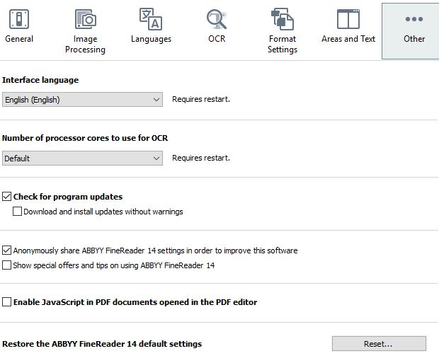

Other Tab
Settings for the Other tab in the ABBYY FineReader Options window.
To access the Options windown, select .
-
Use the default options, except uncheck Show special
offers and turn off Enable JavaScript in PDF
documents. 
- Click OK when finished, to save all settings in the Options window.